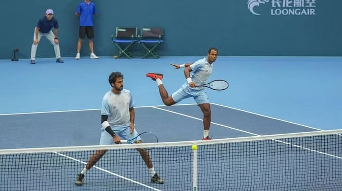

History of Tennis
Tennis originated in France during the 12th century but took its modern form in 19th-century England. Major Walter Wingfield patented a version of lawn tennis in 1874, and the sport quickly grew in popularity.
Tennis is now a globally loved individual and doubles sport, played on grass, clay, and hard courts around the world.
Basic Rules of Tennis
- Played between two players (singles) or four (doubles)
- Players use racquets to hit a ball over a net into the opponent’s court
- Scoring system: 15, 30, 40, and game; win six games to win a set
- Match formats: Best of 3 or Best of 5 sets
- Surfaces: grass, clay, hard, and carpet courts
Major Tennis Tournaments (Grand Slams)
- Australian Open
- French Open (Roland Garros)
- Wimbledon
- US Open
Legendary Tennis Players
- Roger Federer (Switzerland)
- Rafael Nadal (Spain)
- Novak Djokovic (Serbia)
- Serena Williams (USA)
- Steffi Graf (Germany)
- Martina Navratilova (Czech/USA)
Health Benefits of Playing Tennis
- Enhances aerobic and anaerobic fitness
- Improves flexibility, balance, and coordination
- Builds mental toughness and strategic thinking
- Strengthens core, legs, and upper body
- Boosts mood and reduces stress
Global Popularity of Tennis
Tennis is one of the most popular global sports with tournaments and fans on every continent. It is featured in the Olympics and played professionally, recreationally, and in schools worldwide.